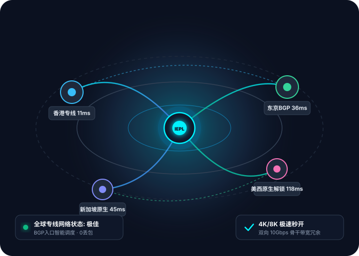

新手教程
2026最新Clash Party机场使用教程：新手从下载到一键导入与规则分流全指南
系统讲解2026年爆火的现代化Clash客户端Clash Party的安装、青云梯订阅一键导入、规则/全局模式切换以及解决国内流量误跑的实用技巧。
青云梯官网（qingyuntijic.mom）专为全球跨境出海、学术科研、影音娱乐及AI生产力打造。集成企业级IEPL内网专线，深度适配 Clash、Clash Party、Shadowrocket 等主流客户端，智能分流国内外流量，提供零门槛、低延迟、高可用的稳定节点连接体验。
全线节点SLA在线率
双向骨干网络冗余
香港专线物理平均延迟

从底层硬件骨干网到应用层分流调优，青云梯重新定义高速稳定的科学上网体验。
入口采用多线BGP智能接入，过境走纯内网专线传输，不经过公共国际出口GFW，杜绝传统便宜机场由于公网敏感导致的频繁掉线与IP污染。
全节点配备万兆光纤上联带宽，YouTube 4K码率轻松稳定拉满200,000+ Kbps，Netflix、Disney+、HBO Max 流媒体超高清画质免缓冲加载。
精选美英日新纯净住宅级落地IP，针对 ChatGPT、Claude 3.5、Gemini、Midjourney 深度适配，有效解决拒访与频繁人机验证困扰。
严格践行无审计日志（No-Log）原则，传输过程采用ChaCha20-Poly1305与AES-256军事级加密，全力保障您的出海通信隐私与数字资产安全。
后台提供一键订阅配置接口，自动更新节点列表，智能过滤失效节点；支持规则分流模式，国内应用毫秒直连，海外流量智能走代理。
自动化容灾调度系统实时监测节点延迟与丢包率，若遇单线上游波动，系统秒级自动重定向至备用专线，确保外贸与办公全天在线。
多地边缘探针每5秒心跳监测 · 晚高峰实测数值
无论是日常轻度查阅文献，还是高吞吐的4K影音与跨境办公，青云梯均提供最实惠的便宜机场方案。
无论是专业开发者、外贸团队，还是休闲影音玩家，都能在青云梯获得量身定制的网络提速方案。
稳定访问 Google Scholar、IEEE、Nature、Science、GitHub 代码库，海外高校网课无卡顿，加速学术论文检索效率。
Amazon、Shopify、TikTok 跨境电商独立站运营，原生节点避免关联风险，支持多海外社媒高效沟通，海外拓客更轻松。
全面解锁 Netflix、Disney+、HBO、YouTube Premium、Spotify 等全球流媒体平台，告别恼人的地区限制与画质降档。
深度适配 OpenAI ChatGPT、Claude 3.5、Google Gemini、Midjourney、Perplexity 等海外主流生成式 AI 工具，对话零阻碍。
简单三步，无论 Windows、macOS 还是手机端，新手用户均可轻松搞定科学上网。
下载最新版 Clash Party 客户端并运行，支持 Windows 与 macOS 原生系统，界面简洁现代，运行占用极低内存。
在青云梯后台点击【一键导入 Clash Party】，或者复制订阅链接粘贴至软件的【Profiles】窗口中并点击下载保存。
在节点列表中勾选【香港】或【日本】专线节点，开启【系统代理 (System Proxy)】，即可畅享秒开体验！
在青云梯用户后台点击【复制 Clash 订阅链接】备用。
打开 Clash Verge 客户端，进入左侧【订阅配置 (Profiles)】菜单，在输入框粘贴链接并点击【Import】。
进入【代理 (Proxies)】页面，选择规则模式（Rule），选定低延迟的专线节点（如香港01）。
回到主界面，将【系统代理】开关滑块推到开启状态，右上角图标变亮即代表连接成功。
使用美区或日区 Apple ID 登录 App Store，搜索并下载官方 Shadowrocket（小火箭）。
使用 Safari 浏览器登录青云梯官网后台，直接点击【一键导入 Shadowrocket】，系统自动唤起小火箭并下载节点。
在小火箭首页下方确认全局路由为【配置 (Config)】，这样国内软件走直连，国外走专线代理。
选中一个香港或日本节点，打开首屏顶部的连接总开关，首次连接弹出 VPN 授权点击 Allow 即可。
下载官方免安装压缩包解压，确认系统已安装 .NET 6+ 运行库环境。
点击上方菜单【订阅分组】->【订阅分组设置】->【添加】，粘贴青云梯订阅链接并确认。
再次点击【订阅分组】->【更新全部订阅 (不通过代理)】，节点列表将全部刷新呈现。
按 Ctrl+A 测速，双击选中延迟最低的节点，底部将路由设为【绕过大陆】，开启系统代理即可。

口碑源于稳定，看看从事外贸、科研、设计与内容创作的伙伴们对青云梯的评价。
“以前用过不少号称几块钱一个月的便宜机场，结果一到开会敏感时期就全线瘫痪。换到青云梯后，IEPL专线真的从来没让我失望过，每天用 ChatGPT 敲代码和写材料丝滑顺畅，完全不担心掉线。”
“我们外贸团队有10多号人，需要同时管理 TikTok 矩阵号和 Amazon 店铺。青云梯的企业专线原生IP非常纯净，没有关联风控提示，晚高峰大文件传输稳定10MB/s+，性价比极高。”
“我是个美剧迷，家里 Apple TV 配上小火箭和青云梯香港专线，Netflix 4K杜比视界直接秒进，进度条随意拖动完全不转圈。教程写得非常小白友好，我这种数码小白3分钟就配好了。”
深度解析 Clash 规则分流、安全机场挑选、低延迟专线加速与出海避坑干货指南。
系统讲解2026年爆火的现代化Clash客户端Clash Party的安装、青云梯订阅一键导入、规则/全局模式切换以及解决国内流量误跑的实用技巧。
便宜不等于劣质。本文教你避开“月抛跑路机场”三大套路，从专线架构、BGP入口和倍率机制全面解析高性价比稳定机场的挑选法则。
科学上网的核心是安全。从无审计日志政策、AES-256军工级加密到全链路IEPL专线，深度拆解如何确保出海通讯与个人数字资产万无一失。
作为CFW的最佳替代者，Clash Verge Rev具备强大的Mihomo/Meta内核。本文带来延迟测试调优、扩展配置编写与故障排查秘籍。
跨境电商店铺封禁大多源于IP污染与频换跳跃。详解如何利用青云梯纯净原生住宅IP构建安全的亚马逊、Shopify和TikTok运营网络环境。
告别“代理被检测”提示！实测青云梯香港、新加坡、美国节点如何完美解锁各大流媒体非自制剧，兼谈软路由与Apple TV全屋代理方案。
为您解答关于节点连接、套餐选择、客户端兼容及售后支持的最常见疑问。
普通便宜机场多使用廉价公网直连（中转机）甚至公网单线，一到晚高峰或敏感时期就大面积降速和断流。青云梯全线采用企业级双向 IEPL 内网专线，物理光缆直通海外机房，不走公网防火墙，延时稳定在 15-40ms 之间，具备 99.98% 以上的 SLA 高可用性，保障全天候 4K 视频秒开不缓冲。
极其简单：在青云梯官网注册并购买套餐后，在用户中心点击【一键导入到 Clash Party / Clash】，软件会自动唤醒并下载最新节点配置。之后在软件中勾选【系统代理】并选择【规则模式 (Rule)】，即可畅通访问 Google、YouTube 等海外站点，而百度、淘宝等国内流量依旧走直连，省时省力。
完全支持。海外 AI 平台对数据中心机房 IP 具有严格的风控封禁机制。青云梯特别部署了原生纯净住宅级 ISP 落地 IP，涵盖美国、新加坡、英国等核心区域，已全面通过 OpenAI 与 Anthropic 的风控验证，杜绝“Access Denied”与“1020 报错”。
套餐流量按自然月或计费周期清零重置。青云梯全节点均为 1.0 倍率健康计量，绝不存在暗扣流量或虚高倍率。如果您当月流量提前耗尽，可在用户后台购买流量叠加包，或者直接平滑升舱至更高规格套餐。
青云梯支持 Windows、macOS、iOS（iPhone/iPad）、Android 手机/平板、Linux 以及 OpenWrt 软路由。根据您选购的套餐等级，支持 2 台至 12 台设备同时在线使用，完美满足个人多端协同或团队协作需求。
常见原因通常是本地系统时间误差大于 60 秒，或者开启了其他安全杀毒软件拦截。您可以：① 同步 Windows/Mac 互联网时间；② 在 Clash 软件中右键刷新订阅；③ 关闭其他冲突代理软件。青云梯后台提供 7×24 小时在线工单支持，技术客服将协助您远程诊断排查。